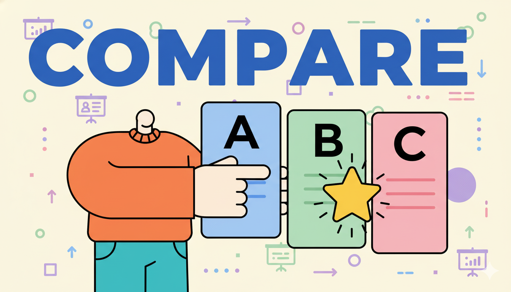

用户体验 幕布里存了500篇笔记，我花了一个周末把它们全部「救」了出来 从踩坑到完美导出的真实经历，看一个幕布深度用户如何用 20 分钟完成 500 篇笔记的本地备份。包括无权限协作文档、收藏夹内容的完整方案。 文/安哥拉 2025-04-01 10 分钟阅读
 方案对比 2024年幕布用户数据备份完全指南：3种方案对比与实操 全面梳理 OPML 命令行、Mubu Dumper、Mubu Exporter 三种方案的优缺点对比与操作步骤。 2025-04-04 15分钟阅读
技术解析 开源一个Chrome插件的技术复盘：如何实现幕布全量导出 Manifest V3 架构设计、幕布 API 逆向、断点续传状态机、7 种格式转换引擎的实现内幕。 2025-04-24 18分钟阅读